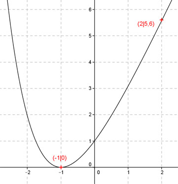

Aufgabe 124 Ergänzen Sie die Wertetabelle für den Graphen: y = e * x + e-x x -1 2 y 0 5,6 1 y = f(2) = e * 2 + e-2 1 y = e * 2 + ---- = 5,6 gerundet e2  An welchen Stellen x die Funktion den Wert 0 annimmt, ist elementar nicht zu ermitteln. Abgelesen: Es ist eine Stelle. fx = 0 eingesetzt: 0 = e * x + e-x Regula falsi: x0 = gesuchte Nullstelle x1 * |y(x2)| + x2 * |y(x1)| x0 = ------------------------------ |y(x1)| + |y(x2)| Abgelesen: Nullstelle zwischen -1,1 und -0,9. (Durch Probieren ermittelt: e * (-1) + e-(-1) = -e + e = 0, d. h. Nullstelle bei x = -1) Nullstelle x0 zwischen -1,1 und -0,9 mit Excel ermittelt: A B C D E F G H I J -1,1 -0,9 0,0132 0,0140 -0,0145 -0,0126 -0,0271 0,0272 -0,9969 0,00001 -1,1 -0,9969 0,0000 0,0140 0,0000 -0,0140 -0,0140 0,0140 -0,9970 0,00001 -1,1 -0,9970 0,0000 0,0140 0,0000 -0,0140 -0,0140 0,0140 -0,9971 0,00001 -1,1 -0,9971 0,0000 0,0140 0,0000 -0,0140 -0,0140 0,0140 -0,9972 0,00001 Die gesuchte Nullstelle ergibt sich nach mehreren Näherungen mit ausreichender Genauigkeit zu x0 = -1 gerundet. Weitere Erläuterungen zur Tabelle siehe Aufgabe 101.